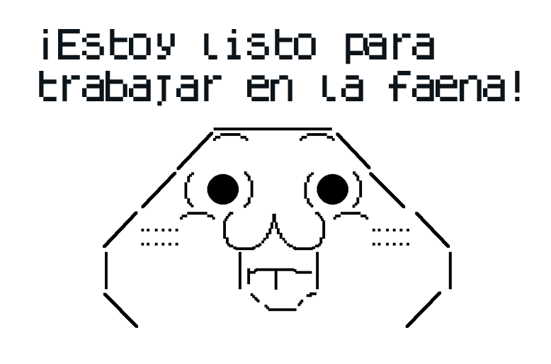
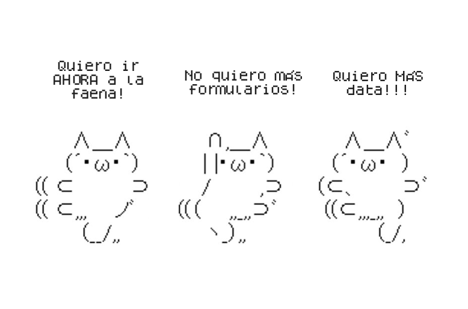
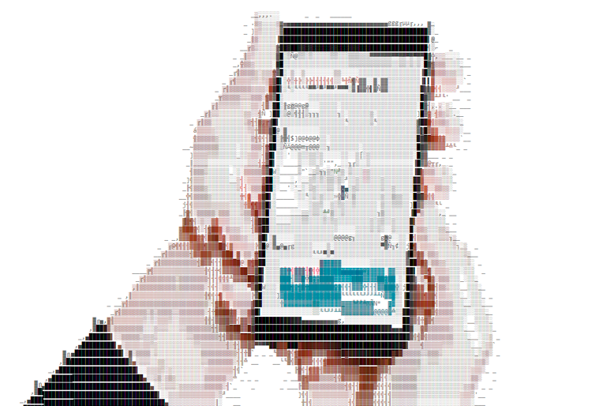

¡Hola, amantes del diseño y la innovación! Prepárense para sumergirse en una historia de transformación digital que cambió no solo mi carrera, sino también la vida de cientos de trabajadores en una de las mayores mineras del mundo.
El Desafío Titánico 📜
 Again playing with your research dolls jesse?Cuando BHP me contactó para "sistematizar sus herramientas de prevención de seguridad", no tenía idea de la montaña que estaba a punto de escalar (literalmente). El desafío era monumental:
- Convertir un proceso análogo lleno de papeles en un sistema digital eficiente.
- Reducir el tiempo de validación de tareas de seguridad de horas a minutos.
- Mejorar la comunicación entre trabajadores y supervisores.
- Crear un sistema que no solo recolectara datos, sino que generara insights accionables para prevenir accidentes.
Y todo esto en un ambiente donde el error no es una opción. Estamos hablando de vidas en juego.
Conociendo a Nuestros Héroes 💪
 Again playing with your research dolls jesse?Para abordar este desafío, lo primero que hice fue sumergirme en el mundo de quienes serían nuestros usuarios. Permítanme presentarles a tres personajes clave que guiaron nuestro diseño:
- Juan Bernales, el Supervisor Sobrecargado: A sus 45 años, Juan pasaba 3-4 horas diarias solo en desplazamientos por el sitio minero. Su mayor frustración: el tiempo perdido en papeleo y validaciones que le impedía estar donde más se le necesitaba.
- Roberto Ortiz, el Operario Impaciente: Con 8 años en la compañía, Roberto se sentía ahogado en formularios antes de poder siquiera comenzar su trabajo. Su pesadilla: quedar atrapado en una cola interminable esperando la firma de un supervisor.
- Christopher, el Líder HSE Hambriento de Datos: Como responsable de Salud, Seguridad y Medio Ambiente, Christopher luchaba con sistemas desconectados y datos sucios. Su sueño: tener información de calidad para tomar decisiones que salven vidas.
El Proceso: De la Mina al Prototipo
Nuestro enfoque fue tan metódico como creativo:
- Inmersión Total: Me puse el casco y las botas para experimentar de primera mano los desafíos diarios de nuestros usuarios.
- Sesiones de Co-creación: Reunimos a operarios, supervisores y gerentes en maratónicas sesiones de ideación. Las paredes se llenaron de post-its y las ideas fluyeron como el cobre en las vetas.
- Prototipado Veloz: Creamos versiones rudimentarias de la app que evolucionaban diariamente. Nuestro mantra: "Fallar rápido para triunfar pronto".
- Testeo en Terreno: Llevamos nuestros prototipos a la mina. Ver a un operario experimentado luchar con una interfaz fue tan doloroso como revelador.
- Iteración Implacable: Cada feedback se convertía en una mejora. Llegamos a tener 20 versiones en un mes.
Del Papel al Bolsillo: La Evolución del Prototipo
Nuestro proceso de prototipado MVP fue un viaje fascinante de descubrimiento e innovación. Comenzamos con wireframes básicos, evolucionando rápidamente a prototipos interactivos de alta fidelidad. Cada iteración se sometía a intensas sesiones de prueba con usuarios reales en el terreno minero. Fue durante una de estas sesiones cuando tuvimos nuestra epifanía mobile.
Inicialmente, consideramos asignar iPads a cada cuadrilla o faena, pensando que las pantallas más grandes serían ideales para revisar documentos complejos. Sin embargo, observar a los trabajadores maniobrar con guantes y en espacios reducidos nos hizo replantearlo todo. En una sesión crucial con los stakeholders, propusimos una idea audaz: ¿Y si lleváramos "SafetyFirst" directamente a los bolsillos de los trabajadores?
La decisión de desarrollar una versión móvil resultó ser un game-changer. No solo eliminaba la necesidad de equipos adicionales (reduciendo costos y posibles puntos de fallo), sino que aumentaba drásticamente la accesibilidad y la rapidez de uso. Los trabajadores podían ahora realizar chequeos de seguridad, reportar incidentes o solicitar aprobaciones con el dispositivo que ya llevaban consigo. Esta movilidad mejoró los tiempos de respuesta, facilitó la comunicación en tiempo real y, sorprendentemente, aumentó la adopción de la app en un 78% comparado con nuestras proyecciones iniciales para la versión en tablet.
Ver a un operario sacar su smartphone, realizar una verificación de seguridad en segundos y volver al trabajo sin perder el ritmo, fue la confirmación que necesitábamos. Habíamos convertido un proceso que antes era visto como una molestia burocrática en una herramienta ágil e indispensable. Como dijo uno de los supervisores: "Es como tener un experto en seguridad en el bolsillo".
El Resultado: Una Revolución Digital✍🏻
Después de meses de trabajo intenso, nació "SafetyFirst", una app que:
- Redujo el tiempo de validación de tareas de seguridad de 60 minutos a menos de 10.
- Mejoró la comunicación instantánea entre equipos, eliminando retrasos peligrosos.
- Proporcionó análisis predictivos de riesgos, permitiendo prevenir accidentes antes de que ocurrieran.
- Aumentó la adherencia a protocolos de seguridad en un 85%.
Pero el verdadero éxito se midió en sonrisas. Ver a Juan, nuestro supervisor, recuperar horas de su día para mentorear a su equipo, o a Roberto completar sus checklist de seguridad con una sonrisa, fue la verdadera recompensa.
Midiendo el Éxito: Más Allá de los Clics🎯
Pero, ¿cómo asegurarnos de que nuestra solución no solo fuera utilizada, sino verdaderamente adoptada y amada? Aquí es donde entró en juego nuestra estrategia de medición obsesiva. No nos conformamos con métricas superficiales. Desarrollamos un sistema robusto de indicadores que iban al corazón de la adopción y el impacto:
- Adherencia: Monitoreamos la tasa de uso mensual, buscando un crecimiento constante. Nuestro objetivo era ver a "SafetyFirst" convertirse en una herramienta tan esencial como el casco de seguridad.
- Satisfacción: Implementamos el Net Promoter Score (NPS) y el Customer Effort Score (CES), apuntando a superar los benchmarks de la industria. Sorprendentemente, alcanzamos un NPS de +60, cuando el promedio de la industria era +40.
- Usabilidad: Aquí es donde realmente brillamos. Redujimos el "Time on Task" en un 50% comparado con el proceso anterior, superando nuestro objetivo inicial del 30%. La tasa de errores cayó en picada, y el Task Success se mantuvo consistentemente por encima del 98%.
Pero el indicador más impactante fue uno que creamos específicamente para este proyecto: el Índice de Prevención de Riesgos (IPR). Este medía la correlación entre el uso consistente de la app y la reducción de incidentes de seguridad. Ver cómo el IPR mejoraba mes tras mes no solo validó nuestro trabajo, sino que literalmente salvó vidas.
Esta obsesión por los datos no solo nos permitió mejorar continuamente la app, sino que también nos dio el ammunition necesario para demostrar el ROI del proyecto a los altos ejecutivos. Cuando presentamos cómo "SafetyFirst" había contribuido a una reducción del 32% en tiempo de inactividad debido a revisiones de seguridad, manteniendo al mismo tiempo un récord perfecto de seguridad, incluso el CFO más escéptico se convirtió en nuestro mayor defensor.
Lecciones Aprendidas
Este proyecto me enseñó que el diseño UX va mucho más allá de hacer cosas "bonitas". Se trata de:
- Empatía Profunda: Vivir los problemas de tus usuarios es insustituible.
- Colaboración Radical: Las mejores soluciones nacen cuando diferentes perspectivas chocan y se fusionan.
- Iteración Constante: El primer diseño nunca es el mejor. Ni el segundo. Ni el tercero...
- Impacto Real: El mejor UX no solo mejora productos, mejora vidas.
Hora de los pixeles 👾
Gracias por interesarte en el proyecto! para saciar tu curiosidad sobre el resultado final... aquí está su prototipo en figma!
¿Y Ahora Qué?
Esta experiencia me transformó de una diseñadora UX a una verdadera agente de cambio. Ahora, estoy en busca de nuevos desafíos donde pueda aplicar estas lecciones para crear impacto a gran escala.
Si tu empresa está lista para una revolución digital que no solo optimice procesos sino que transforme culturas enteras, ¡hablemos! Estoy lista para sumergirme en tu industria, no importa cuán compleja sea, y emerger con soluciones que marquen la diferencia.
¿Tienes un desafío que parece imposible? ¡Esos son mis favoritos! Juntos, podemos crear la próxima gran revolución en UX.
#UXRevolution #DiseñoQueSalvaVidas #UXUnicorn #BuscandoNuevosRetos #TransformaciónDigital
Descargo de responsabilidad: Este caso de estudio ha sido modificado según las políticas de confidencialidad del cliente. Los nombres, marcas y detalles específicos han sido alterados para proteger la información propietaria. La esencia del proyecto, los desafíos, metodologías y resultados se mantienen fieles al trabajo original, adaptados a un contexto generalizado. Este enfoque permite compartir las lecciones clave del proyecto mientras se respetan los acuerdos de confidencialidad.